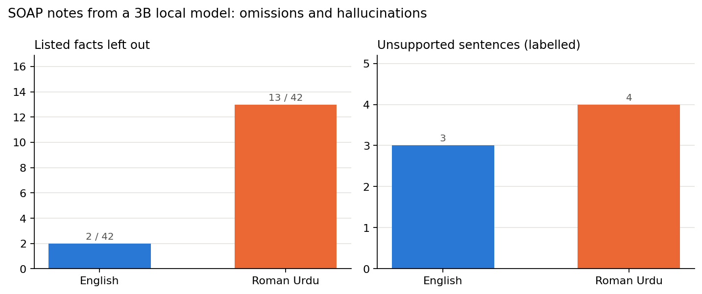

Experiment · Clinical AI · Roman Urdu
In Roman Urdu, a small AI wrote notes about the wrong body part
Same consultations, same model. In English the notes were close to the transcript. In Roman Urdu the back became the knees.
By Muzammal Hussain · 21 October 2026 · 5 min read
AI scribes listen to a consultation and draft the clinical note. A 2025 study in npj Digital Medicine by Asgari and colleagues had clinicians check 12,999 sentences of GPT-4 notes from 450 simulated UK consultations. They found that 1.47% of sentences were hallucinated (not supported by the conversation) and 3.45% of facts were omitted, and that 44% of the hallucinations were serious enough to change care, most often in the Plan. Their study used one large cloud model and English only. I wanted to see what happens with a small model that runs on a laptop, and with consultations in Roman Urdu, the way many patients in Pakistan and the UK actually talk.
Key findings
- Roman Urdu notes left out 13 of 42 key facts; English notes left out 2. Seven of the Roman Urdu omissions were critical, including red-flag answers. English kept every critical fact.
- Three of four Roman Urdu notes described the wrong body part: lower back became knees, a knee became a groin strain, and the neck became the shoulder.
- The model invented details: "a 45-year-old male" with "no known allergies", and night pain "starting at 10 PM for 5 hours" from "10 mein se 5" (5 out of 10).
- In English the most serious error was in the Plan: "crutches if needed" became "avoid putting weight on the knee".
- My automatic checker missed most of the Roman Urdu errors, because they sat outside the Plan and used numbers that did appear in the transcript.
What I did
I wrote four short, fictional physiotherapy consultations: lower back pain after lifting, a twisted knee from football, a stiff shoulder in a patient with diabetes, and neck pain from desk work. Each was written in English and in Roman Urdu with the same facts and the same digits. No real patient data was used.
The model was qwen2.5:3b, running locally through Ollama on a MacBook M4 with 16 GB of memory. For each of the 8 transcripts it wrote an English SOAP note (Subjective, Objective, Assessment, Plan) with the instruction to include only what was said. Then:
- Omissions: each consultation had 10 or 11 listed facts, some marked critical (red-flag answers, medication, the injured side, referrals). A script checked whether each one appeared in the note.
- Hallucinations: a checker flagged sentences with a number or drug that was not in the transcript, or a denied symptom written without a negation. Every Plan sentence was also reviewed, because that is where the paper found most serious errors. I labelled each reviewed sentence as supported or not, and each unsupported one as major (could change diagnosis or treatment) or minor.
Results

| Language | Facts missing | Critical missing | Unsupported (reviewed) | Major |
|---|---|---|---|---|
| English | 2 of 42 | 0 | 3 of 14 | 1 |
| Roman Urdu | 13 of 42 | 7 | 4 of 12 | 2 |
The wrong body part
The labels only covered 26 of the 129 note sentences. Reading the full notes showed bigger problems in Roman Urdu:
| Consultation | Patient said | Note wrote |
|---|---|---|
| Lower back pain | "kamar ke nichle hisse mein dard" | "pain in the knees", exercises "for the knees" |
| Twisted knee | "daayan ghutna", swollen | "groin strain", "no swelling" |
| Neck pain | "gardan mein dard", "chakkar nahi" | "shoulder pain", "no circular motion" |
| Stiff shoulder | "10 mein se 5" (5 out of 10) | night pain "starting around 10 PM, lasting up to 5 hours" |
A note about the wrong body part leads to the wrong examination and the wrong treatment. The missing red flags matter just as much: "no numbness" and "no problems passing urine" are the answers that rule out an emergency in back pain, and in Roman Urdu they were simply dropped.
Why my checker missed it
The checker looked for numbers and drug names that were not in the transcript. "10 PM" and "5 hours" passed, because 10 and 5 were both there; it was the meaning that was invented. And most errors were in the Subjective and Assessment sections, which were not reviewed unless flagged. The paper's authors note that manual labelling is expensive and suggest an LLM judge with clinician oversight. My result shows why that oversight matters: simple automatic checks can give a false sense of safety.
What this means for MeetPhysio
For a local clinical scribe, Roman Urdu cannot be passed straight to a small model and trusted. One option is to translate the transcript into English first and then draft the note. That is a hypothesis, not a result: the translation step could make the same mistakes, like reading "chakkar" (dizziness) as circular motion, so it needs its own test. Whatever the pipeline, a clinician has to read the whole note, not only the Plan.
Limitations
This is a pilot: four consultations I wrote, one small model, one run at temperature 0. The omission check uses keywords, so a fact written in unexpected words counts as missing. I labelled the sentences myself, while the paper used two clinicians per note. Only 26 of 129 sentences were labelled, and the body-part errors come from reading the notes, not from a full count. The transcripts are clean text; real ones would come from speech-to-text, which adds its own errors.
What I will test next
- Label every sentence of all eight notes for a complete hallucination count.
- Translate-then-draft against direct drafting on the same Roman Urdu consultations.
- A larger local model, and Whisper transcripts in place of clean text.
Paper: Asgari E., Montaña-Brown N., Dubois M., Khalil S., Balloch J., Au Yeung J., Pimenta D. (2025). A framework to assess clinical safety and hallucination rates of LLMs for medical text summarisation. npj Digital Medicine 8, 274. doi:10.1038/s41746-025-01670-7. Model: Qwen2.5 3B run locally with Ollama. Every drafted note and every label is in the GitHub repository.